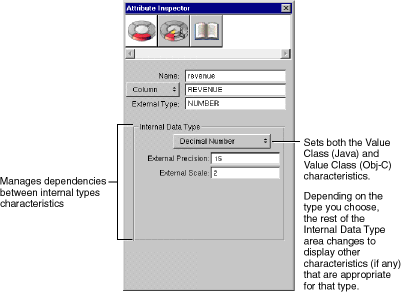

Table of Contents
Table of Contents  Previous Section
Previous Section

Figure 20. Setting Internal Data Type Characteristics with he Attribute Inspector
To view an attribute in the Attribute Inspector, select the attribute in the Model Editor and open the inspector, either by clicking the button in the toolbar or by choosing Tools
 Inspector.
Inspector.
Using Custom Data Types
Some attributes, such as TalentPhoto's photo attribute, use custom value classes to represent them inside your application. When you use a custom data type, you are responsible for specifying how the data is read from and written to the database. You can use the Attribute Inspector to specify a custom data type. For a description of how to do this, see the chapter Advanced Enterprise Object Modeling in the book Enterprise Objects Framework Developer's Guide. See the class specification for EOAttribute in the Enterprise Objects Framework Reference for more discussion of custom data types.
 Next Section
Next Section